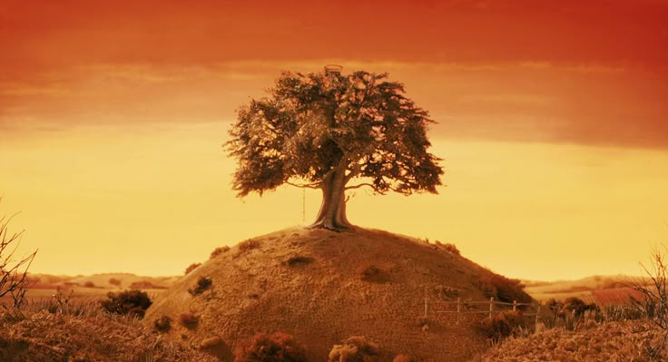

UN RECORRIDO POR EL UNIVERSO DE WES ANDERSON
FANTASTIC
MR. FOX.
Un zorro, tres granjeros y un mundo donde la aventura se esconde bajo tierra.
COMENZAR EL RECORRIDO ↗
UNIVERSO CINEMATOGRÁFICO / 2009
EL CONCEPTO
Un mundo pequeño.
Una gran aventura.
Explora los espacios de Fantastic Mr. Fox, descubre a sus personajes y recorre los escenarios que construyen esta historia. Cada lugar tiene algo que contar y una ruta diferente por descubrir.
ELIGE TU CAMINO
Mapa de espacios.
 02 / CONFLICTO
02 / CONFLICTO
 04 / ESCAPATORIA
04 / ESCAPATORIA
 05 / ABUNDANCIA
05 / ABUNDANCIA
EXPERIMENTA
TOCA. CAMBIA.
ESCUCHA.
Pulsa las letras para cambiar sus colores y activar la música.